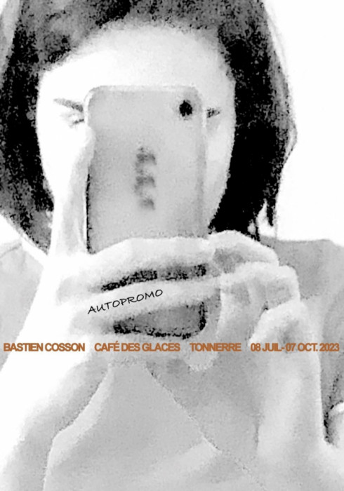
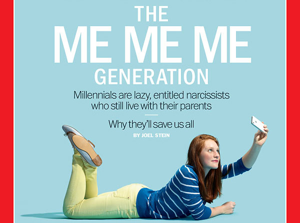
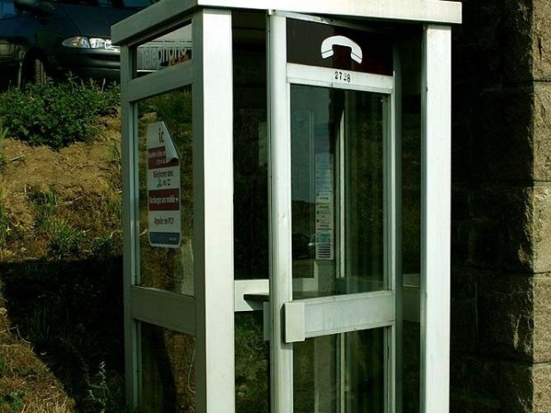

Vous souvenez-vous de vos premiers pas sur Internet ? Beaucoup d’entre nous ont grandi à une époque où les téléphones avaient des touches, où les SMS étaient limités à 200 caractères, et où ouvrir un Skyblog ou bidouiller du HTML se faisait sans trop y penser. À cette époque, chaque hobby avait son forum, et on était sûrs que chaque mot publié sur le web venait d’une vraie personne, quelque part.
Puis, tout a changé avec l’arrivée des réseaux sociaux. Facebook, le premier. Certains ont collectionné les « amis » bien avant tout le monde, pendant que d’autres, ont mis du temps à s’y faire. Et alors qu’on commençait à apprivoiser ce nouvel espace, Instagram a débarqué, puis TikTok, et la course ne s’est jamais vraiment arrêtée.

Potes & Bots
Histoire d'amour numérique
1010 - 10.7.2025
Aujourd’hui, en 2025, nous jonglons tous avec une multitude de plateformes. WhatsApp pour les amis et les collègues, avec un compte pro, un compte perso, Facebook pour la famille ou les évènements, Instagram pour les rencontres ou les projets, TikTok pour les plus téméraires… Sans oublier les irréductibles du SMS ou ceux qui préfèrent encore décrocher leur téléphone pour un appel. Cette surabondance de canaux nous pousse à nous comporter, parfois, comme de véritables « bots » : il faut donner des nouvelles, montrer qu’on existe, partager, publier, commenter. Les rencontres spontanées se font rares ; il est devenu difficile de commencer une conversation sans raison, tant nous sommes informés sur tout et sur tous.

On a souvent entendu que notre génération était « égocentrée », la fameuse « me me me generation » dont parlait le Times en 2013. Mais au fond, est-ce vraiment le cas ? Derrière les selfies et les stories, c’est surtout une envie de connexion qui s’exprime. Notre époque a mis en avant l’empathie, la communication non-violente, le respect de l’autre .

On peut être nostalgique d’une époque où tout semblait plus simple, avec moins de plateformes. Mais cette diversité de formats et de modes d’expression a aussi ses avantages. Certains préfèrent les vocaux, d’autres les longues discussions écrites, d’autres encore les stories ou les appels improvisés. Chacun trouve sa façon de communiquer, de tisser des liens, de partager ses passions.

Au final, si l’on accepte de vivre dans un monde dématérialisé, force est de constater que jamais il n’a été aussi facile de rencontrer des personnes qui nous ressemblent, de se regrouper autour de centres d’intérêt communs, de s’ouvrir à de nouvelles communautés. Oui, il y a moins de place pour le hasard, mais il y a aussi plus d’opportunités pour l’échange.
Récit
0001